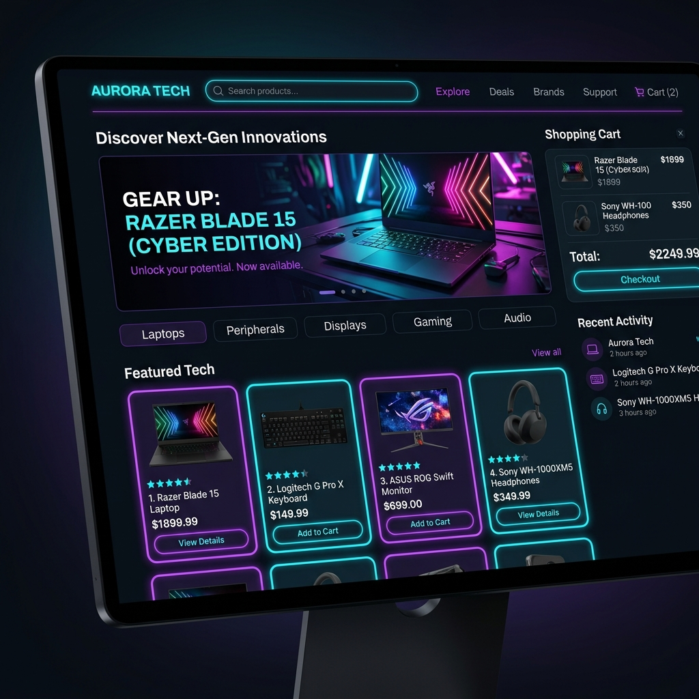
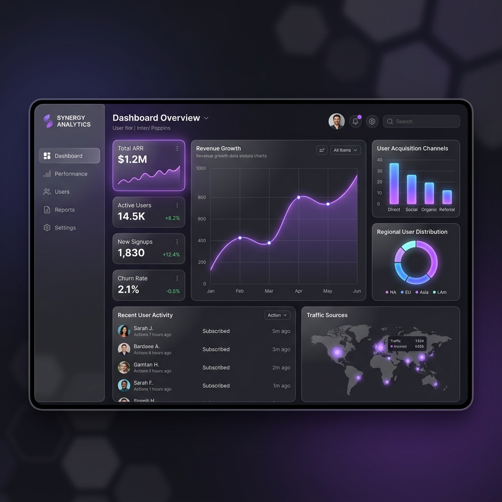

LuxMarket — Platform E-Commerce Modern
Toko online toko busana eksklusif lengkap dengan fitur checkout cepat, integrasi sistem pembayaran, dan filter katalog dinamis.
Halo! Saya Adrian, seorang Full Stack Web Developer dan UI/UX Designer yang berfokus menciptakan pengalaman web yang estetik, intuitif, dan responsif.
Tahun Pengalaman
Proyek Selesai
Klien Puas
Mengkombinasikan logika pemrograman yang solid dengan estetika desain visual yang menawan.
Saya memulai perjalanan di dunia pengembangan web sejak 3 tahun lalu dengan rasa ingin tahu yang besar terhadap bagaimana situs web interaktif dibuat dari awal.
Fokus utama saya adalah menciptakan produk digital yang tidak hanya terlihat elegan dan modern, tetapi juga cepat, mudah diakses (accessible), dan aman. Saya menyukai tantangan dalam memecahkan masalah kompleks dan mengubah ide menjadi aplikasi yang siap pakai.
Integrasi UI yang responsif dan fleksibel dengan HTML5, CSS3, & Modern JS.
Pengembangan API cepat & aman menggunakan Node.js dan database SQL/NoSQL.
Merancang alur pengguna dan antarmuka intuitif melalui Figma.
Optimasi kecepatan muat halaman dan struktur SEO terbaik.
Alat dan bahasa pemrograman yang saya gunakan sehari-hari untuk mewujudkan ide Anda.
Perangkat kerja untuk mempermudah proses alur desain hingga deployment:
Beberapa hasil karya terbaik yang telah saya buat dengan perhatian pada detail.

Toko online toko busana eksklusif lengkap dengan fitur checkout cepat, integrasi sistem pembayaran, dan filter katalog dinamis.

Aplikasi dashboard web interaktif untuk pemantauan metric performa bisnis, visualisasi data grafik, dan ekspor laporan.
Perancangan antarmuka pengguna untuk aplikasi dompet digital modern dengan tema dark mode yang elegan dan intuitif.
Perjalanan profesional saya dalam dunia industri kreatif dan pemrograman.
Memimpin tim pengembang dalam membangun situs web skala besar, aplikasi SaaS, serta mengoptimalkan arsitektur sistem frontend & backend.
Merancang antarmuka pengguna yang responsif, mengimplementasikan prototipe Figma ke dalam kode HTML/CSS/JS, serta meningkatkan skor Google Lighthouse hingga 98+.
Membantu puluhan klien UMKM dan startup lokal membuat landing page profesional, portofolio online, dan integrasi CMS kustom.
Lulus dengan predikat Cumlaude, berfokus pada Rekayasa Perangkat Lunak, Algoritma Pemrograman, dan Desain Komunikasi Visual.
Punya ide proyek menarik atau ingin berdiskusi? Jangan ragu untuk mengirimkan pesan!
adrian.dev@example.com
+62 812-3456-7890
Jakarta, Indonesia (Tersedia Remote)